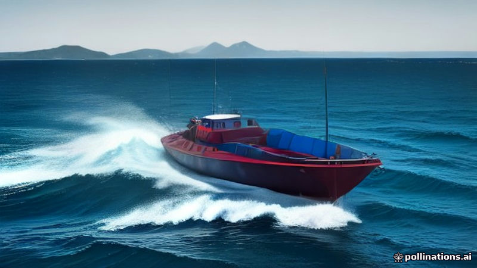

ক্যানারি দ্বীপপুঞ্জের কাছে ১৪ অভিবাসীর দেহ উদ্ধার
Prothom Alo · 2026-11-28
AI-generated illustrationপ্রায় ১০০ যাত্রীবাহী নৌকা উদ্ধার করার সময় ১৪ মৃত অভিবাসী পাওয়া যায়, যা স্থানীয় প্রশাসনের ওপর চাপ বাড়িয়ে দেয়।
প্রোথোম আলোর মতে, স্পেনের ক্যানারি দ্বীপপুঞ্জের কাছে প্রায় ১০০ যাত্রীবাহী একটি নৌকা উদ্ধার করা হয়। অপারেশনের সময় নৌকায় ১৪ অভিবাসীর মৃতদেহ পাওয়া যায়।
এই ঘটনা স্থানীয় প্রশাসনের ওপর চাপ বাড়িয়ে দিয়েছে, যা বাড়তি অভিবাসন প্রবাহের মধ্যে পরিস্থিতি সামাল দিতে সংগ্রাম করছে।
Facts reported by: Prothom Alo
Read the original reporting at the links above.
Written by AI from facts reported by the outlets named above. It may contain errors; check the original reporting.Read the original reporting at the links above.
English version
14 Migrant Bodies Recovered After Rescue Near Spain's Canary Islands
According to Prothom Alo, a boat carrying roughly 100 passengers was rescued near Spain's Canary Islands. During the operation, authorities discovered the bodies of 14 migrants on the vessel.
The finding has increased pressure on the local administration, which is struggling to manage the situation amid heightened migration flows.